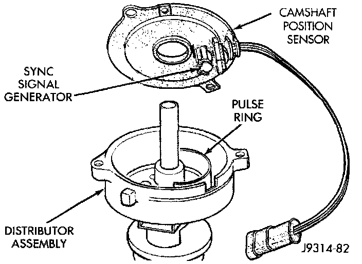

Distributor: Description and Operation
DISTRIBUTORFig. 2 Distributor and Camshaft Position Sensor - Typical (V8 Shown):

These engines are equipped with a camshaft driven mechanical distributor containing a shaft driven distributor rotor. All distributors are equipped with an internal camshaft position (fuel sync) sensor (Fig. 2). This sensor provides fuel injection synchronization and cylinder identification.
The distributor does not have built in centrifugal or vacuum assisted advance. Base ignition timing and all timing advance is controlled by the Powertrain Control Module (PCM). Because ignition timing is controlled by the PCM, base ignition timing is not adjustable.
The distributor is locked in place by a fork with a slot located on the distributor housing base. The distributor holddown clamp bolt passes through this slot when installed. Because the distributor position is locked when installed, its rotational position can not be changed. Do not attempt to modify the distributor housing to get distributor rotation. Distributor position will have no effect on ignition timing. The position of the distributor will determine fuel synchronization only.
All distributors contain an internal oil seal that prevents oil from entering the distributor housing. The seal is not serviceable.